AI Academy · Level 4 · Grade 9 · Week 26 · Student lesson
Reproducible Experiments
Learn to understand, design, build, test and explain AI systems responsibly.
Project: Responsible Plant Classifier
Before you start
AI-2 Week 35: comparisons need identifiable versions and fixed criteria.
Plan time to read, investigate and explain. Keep predictions separate from observations.
Student lesson · 1 of 17
Your mission
Your learning target
I can record enough detail to reproduce a run.
I can distinguish reproducibility from validity.
I can report all planned seeds instead of selecting the best.
Remember before reading
Close your notes first. A rough first answer helps us choose the right starting point; it is not a score for your ability.
Without opening the old lesson, explain one key idea from Metrics Match Consequences. Give an example and a mistake that the idea helps you avoid.
Without opening the old lesson, explain one key idea from Hold Out Test Data. Give an example and a mistake that the idea helps you avoid.
Without opening the old lesson, explain one key idea from Mean, Median, and Baselines. Give an example and a mistake that the idea helps you avoid.
After trying, check the relevant lesson or ask your teacher. Change the part of your explanation that the evidence shows was wrong.
A result is reproducible only when another builder can recreate the data, split, code, settings, seed, and metric calculation.
Builder name and experiment date:
Readiness for the connected explanation
What must accompany a reported validation score?
Readiness for Versioned experiments
Why should expected test results be written before running the function?
This week’s end goal
By the end, I can explain reproducible experiments using a traced example and a stated limitation.
Student lesson · 2 of 17
Notice the evidence
PICTURE ENTRY
Notice → Predict → Explain
Begin with visible evidence; do not explain more than the picture and information support.
Name three visible details without interpreting them.
Predict the data, model, or evaluation decision being made.
Identify one hidden assumption that could change the result.
State what evidence would confirm or reject your prediction.
My prediction and supporting evidence:
A closer explanation
A seed can help repeat a random split or initialization, but it is not a magic quality stamp. Save data version, split membership, code version, settings, preprocessing, seed and metric definition. Some software operations remain nondeterministic, so document tolerances and environment too.
Use fictional classroom data throughout this investigation. Keep the task, units, reference labels and data split visible as you reason. Earlier weeks supplied the model-building process; this week examines experimental records and seeds.
Apply the connected idea: Versioned experiments
A fictional activity scoring experiment compares two weight settings on the same development records. Save code version, input version, weights, tie rule and outputs. A label such as v2 is useful only when it refers to an identifiable saved state.
Student lesson · 3 of 17
See how it works
ML MECHANISM
Input → Model → Evidence
Trace the information, fitted behavior, and evaluation proof separately.
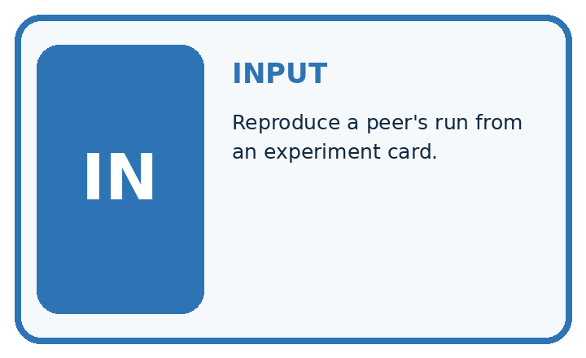
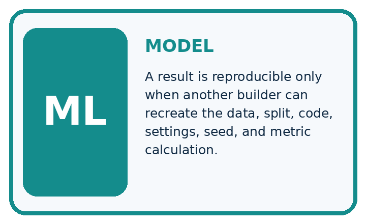
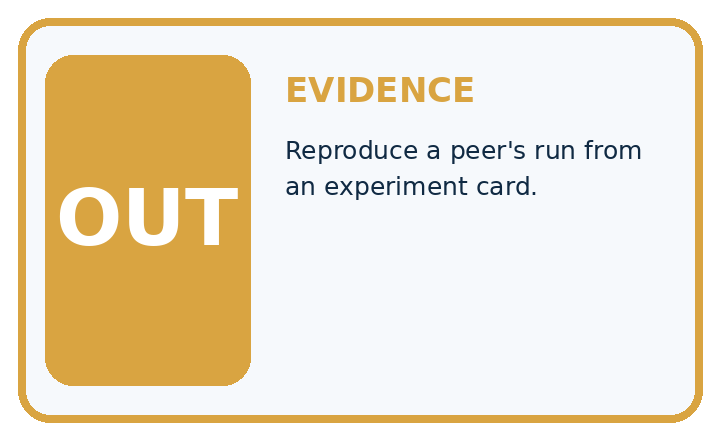
QUESTION Reproduce a peer's run from an experiment card.
MODEL IDEA A result is reproducible only when another builder can recreate the data, split, code, settings, seed, and metric calculation.
PROOF NEEDED Use an unseen case, visible calculation, error analysis, and a stated limitation.
Draw a fresh data → model → prediction → evaluation trace:
A closer explanation
A team declares seeds 11, 22, 33 before running. Validation accuracies are 14/20, 16/20, 12/20:70, 80, 60 percent. Mean accuracy is 70 percent, with a 20-percentage-point range. Reporting only seed 22 as the model result hides the declared experiment.
Before continuing, underline the decision rule and circle the evidence that supports the conclusion. Explain the example to a partner without replacing the counts or conditions with a stronger claim. Keep the distinction between an observed result and a proposed next step.
Apply the connected idea: Versioned experiments
items = [{"name": "A", "fun": 4, "learning": 1},
{"name": "B", "fun": 2, "learning": 4}]
for version, fun_weight, learning_weight in [("v1", 2, 1), ("v2", 1, 2)]:
scores = []
for item in items:
scores.append(fun_weight * item["fun"]
+ learning_weight * item["learning"])
print(version, scores)Follow the evidence
The ranking changes because the preference weights changed. That is a policy comparison, not proof that v2 is more accurate. Keep the same data and constraints when comparing weights, and record why a policy better fits the stated goal.
Compare one planned change at a time
For the worked records, v1 gives A a score of 2 times 4 plus 1, or 9, and B a score of 2 times 2 plus 4, or 8. v2 gives A 4 plus 2 times 1, or 6, and B 2 plus 2 times 4, or 10. The winner changes because the weights changed. Keep the records fixed so this explanation can be checked. A different preference policy is not automatically a more accurate model.
Connect the picture and the explanation
Point to the input, the deciding step and the result in this week’s visual. Explain the same step in ordinary words. A picture helps when you can say what each part represents.
Student lesson · 4 of 17
Compare the cases
EVALUATION DESIGN
Four Tests, Four Kinds of Evidence
A system is not understood until it survives more than one comfortable example.


NORMAL Expected data and expected behavior.
BOUNDARY Value close to a threshold, ambiguous label, or uncertain prediction.
MISSING Necessary field, label, source, or measurement is unavailable.
SHIFTED New lighting, species, device, subgroup, or time condition.
Which case most threatens today's claim, and why?
Change one thing in the pictured case
Change: The report deletes the 60% run.
Prediction: The remaining mean rises to75%, but the reported comparison becomes selectively incomplete.
Reason: Removing an unfavourable declared run changes the evidence rather than improving the method.
Student lesson · 5 of 17
Words that unlock the idea
VOCABULARY
Words You Can Calculate and Defend
A definition matters when it lets you interpret a new dataset, model, or result.
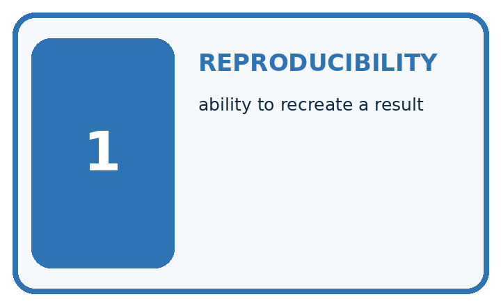
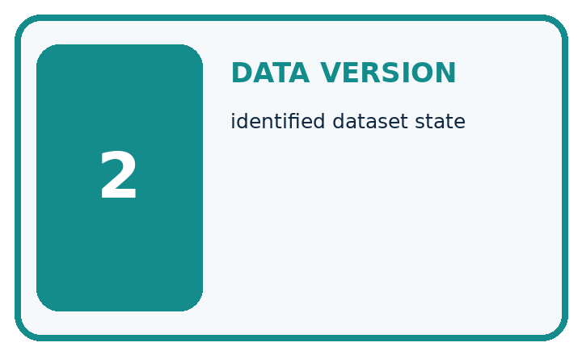
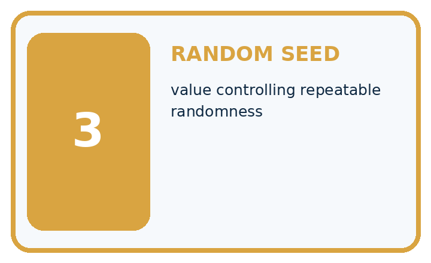
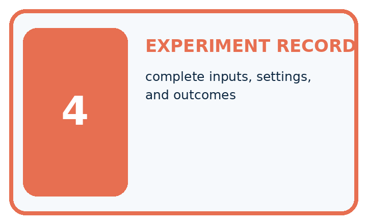
| Term | Precise meaning | My ML example |
|---|---|---|
| reproducibility | ability to recreate a result | |
| data version | identified dataset state | |
| random seed | value controlling repeatable randomness | |
| experiment record | complete inputs, settings, and outcomes |
Repair the claim using a definition, calculation, or test record:
Words used in the closer explanation
| Word | Meaning |
|---|---|
| Seed | An initial value controlling a pseudo-random process |
| Run record | A saved account of inputs, settings and outputs |
| Reproducibility | Ability to repeat a specified procedure |
| Cherry-picking | Reporting favorable results while hiding relevant others |
Terms for Versioned experiments
| Term | Meaning |
|---|---|
| Version | An identified state of code or rules |
| Configuration | Settings used for a run |
| Development set | Cases used while choosing or improving a method |
| Holdout | Cases reserved for an evaluation after choices are fixed |
Student lesson · 6 of 17
Follow a worked example
WORKED EVIDENCE
Reason Step by Step
Predict first. Then check each step. A correct answer without visible evidence cannot be audited.
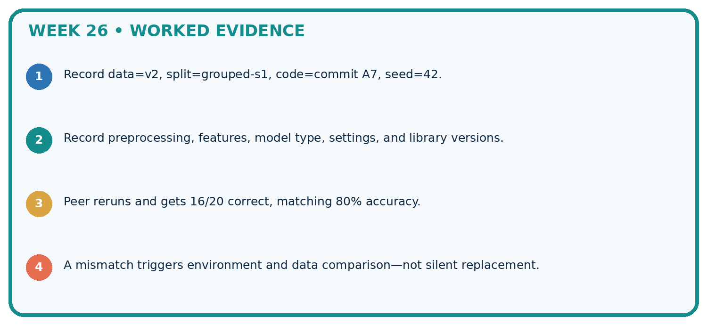
STEP 1 Record data=v2, split=grouped-s1, code=commit A7, seed=42.
STEP 2 Record preprocessing, features, model type, settings, and library versions.
STEP 3 Peer reruns and gets 16/20 correct, matching 80% accuracy.
STEP 4 A mismatch triggers environment and data comparison—not silent replacement.
Recalculate, retrace, or restate the evidence independently:
A closer explanation
Experimental records and seeds at a glance
Apply the connected idea: Versioned experiments
Learn from the worked case
Cover the result before checking it. Say what is given, choose the procedure, and follow one step at a time. Then uncover the result and explain your first mismatch. Ask why a step is allowed, not only what number it produces.
A pictorial worked case: Reproducible Experiments
Record variation across declared seeds instead of selecting the prettiest run.
The facts we will use
Same fixed validation set of10 cases; declared runs seed 4=6 correct, seed 5=8, seed 6=7. All three are reported.
All inputs and outcomes in this worked example are invented classroom data; no real model run is claimed.


Read the picture one step at a time
Why this result follows
Read the picture in order. Record data version, split, code, settings and seeds, not just the winning80%. The arrows show which recorded input or intermediate result each decision uses. Explain the deciding step aloud before checking the changed case; pointing to the final answer alone does not show how it follows.
What this example does not establish
Seeds help reproduction but do not necessarily remove hardware or library nondeterminism; report the actual environment.
Read the labelled picture: What should accompany the mean 70%? Point to the relevant step in the picture, then write the changed result and the rule or evidence that supports it.
Change one thing: The report deletes the 60% run. Predict the result before checking the explanation. What remains the same?
Student lesson · 7 of 17
Find and repair a mistake
ERROR DETECTIVE
Compare → Diagnose → Repair
Do not patch the answer. Find the earliest unsupported assumption, data problem, or experiment error.
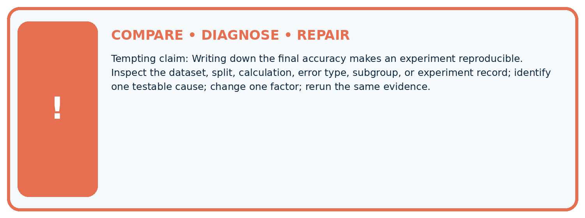
| Evidence record | Expected | Actual | Likely cause / next test |
|---|---|---|---|
| normal case | passes | ||
| boundary case | defined behavior | ||
| missing case | safe fallback | ||
| shifted case | measured limit |
Diagnose one cause and name the cleanest next experiment:
A closer explanation
When comparing two methods, use the same declared splits or seeds where appropriate and compare paired results. A mean across reused samples does not automatically provide a statistical confidence claim. Report the procedure and observed variation plainly.
Apply the connected idea: Versioned experiments
Once holdout results guide another change, those cases have become development evidence. A later independent evaluation needs new reserved cases. Small holdouts still provide limited evidence.
Student lesson · 8 of 17
Practise together
ML STUDIO
Specify Before You Run
A trustworthy result can be reproduced from the recorded data, code, settings, and evaluation rule.

Experiment record
QUESTION + intended use + success threshold
DATA version + grouped split + leakage check
CODE/preprocessing + features + model + settings + seed
METRICS + positive class + units + denominators
PREDICTIONS + errors + subgroup slices + limitations
HUMAN reviewer + release, revise, limit, or stop decision
Write the minimum record needed to reproduce today's result:
A closer explanation
A small record can contain run ID, timestamp, dataset checksum, training and validation IDs, model settings, feature version, seed, predictions and notes. Keep personal information out of exported logs. Save failed runs with reasons instead of quietly removing them.
Apply the connected idea: Versioned experiments
Overwriting a file called latest removes the ability to reproduce earlier results unless versions are retained elsewhere. Save identifiable versions and a run log. Avoid editing a reserved final test after seeing its output to make the chosen version look better.
Practise with less help: Improve a record
Use workbook W2 for the connected example “Experimental records and seeds”. First fill the input and rule boxes. Try the middle steps before asking for a hint. After a hint, try the next step yourself.
| Plan | Do | Check |
|---|---|---|
| What is given? Which rule or procedure applies? | Record each intermediate step. | Does the result follow? What remains unknown? |
Explain your trace to a partner. Your partner points to one step to check. Swap roles on the next case. Each person writes their own explanation.
Check your reasoning
Use the worked case for Experimental records and seeds. Proposed explanation: “A final answer is enough”. Decide whether this explanation is supported. Point to the step or supplied fact that decides; explain your repair if needed.
Answer on your own before discussion. If you are unsure, say which step you need help with.
Practise the connected topic: Versioned experiments
Use its named workbook W2. Identify the given inputs, try the middle steps with less help, then explain your trace. Check this claim before group discussion: A successful run proves the conclusion
Explain the picture
What should accompany the mean 70%? Point to the relevant step in the picture, then write the changed result and the rule or evidence that supports it.
This is supported practice. Keep the separately named independent case for an attempt before feedback.
Student lesson · 9 of 17
Run the investigation
EVIDENCE LAB
Predict → Run → Calculate → Interpret
Keep the test conditions fixed, record every result, and change only one planned factor.
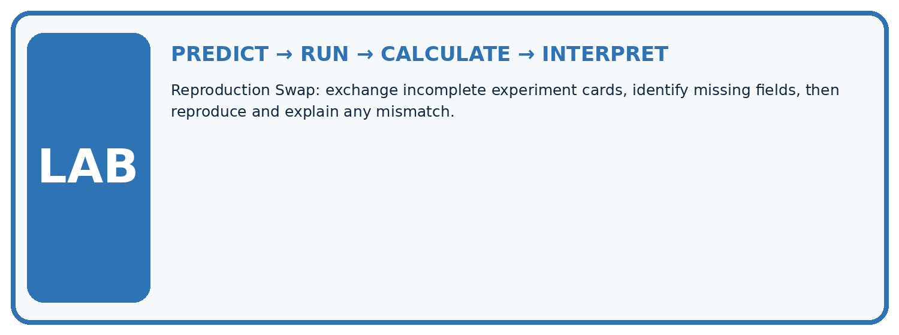
1. Write the hypothesis and expected evidence before running.
2. Reproduction Swap: exchange incomplete experiment cards, identify missing fields, then reproduce and explain any mismatch.
3. Run one normal, one boundary, one missing, and one shifted case.
4. Calculate the metric from raw counts or row-level errors.
5. Interpret what changed, what did not, and what remains unsafe or unknown.
| Case | Prediction | Actual | Calculation / evidence | Meaning / next test |
|---|---|---|---|---|
| Normal | ||||
| Boundary | ||||
| Missing | ||||
| Shifted |
Plan → try → check
Before trying: what do I expect, and why? While trying: which step could first go wrong? Afterwards: what did I actually observe, and what should change? Keep “not run” if you only traced the procedure.
Student lesson · 10 of 17
Build your understanding
MASTERY
From Knowing the Word to Owning the Idea
Move upward only when you can produce evidence without copying the example.

DEFINE Use all four terms precisely: reproducibility, data version, random seed, experiment record.
CALCULATE Reproduce the worked evidence with units and denominator.
TRACE Explain the data, code or decision path.
DIAGNOSE Writing down the final accuracy makes an experiment reproducible.
TRANSFER Solve a fresh dataset or model case.
IMPROVE Change one cause and rerun fixed evidence.
DEFEND State intended use, metric, limitation, and human responsibility.
Student lesson · 11 of 17
Connect your project
CUMULATIVE PROJECT
Responsible Plant Classifier
Every week adds one reviewable artifact to the same evidence-based capstone.
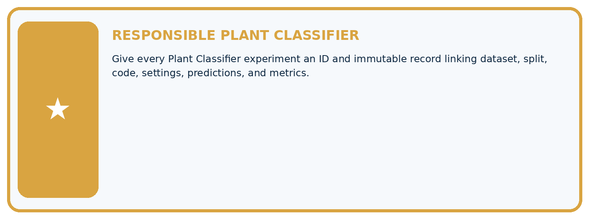
Which requirement or risk does this artifact address?
Which dataset, split, code, and metric version does it use?
What normal and shifted cases were tested?
What remains uncertain or weak?
What decision still belongs to a teacher or qualified human?
My evidence-linked project decision:
Evidence for your project
For your Responsible Plant Classifier, save the input, procedure, observed result and limitation of this check. Label this worked example as practice; use a different, previously unreviewed case when checking independent understanding.
Student lesson · 12 of 17
Show what you know
INDEPENDENT PROOF
Explain • Calculate • Transfer • Defend
Complete this with a fresh case after guided practice and compare it with the mastery criteria.
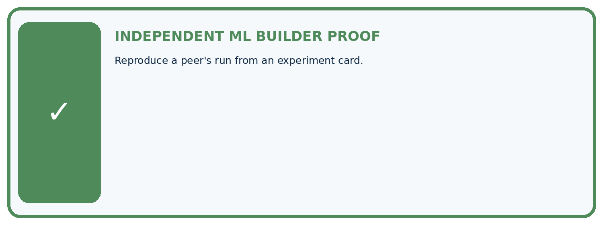
□ Define the task, feature/target roles, and intended-use boundary.
□ Show the calculation, code trace, or experiment record.
□ Test a normal case and one revealing boundary, missing, or shifted case.
□ Diagnose one failure without changing several factors at once.
□ Name a limitation, fairness concern, and the human-review action.
Independent evidence and defense:
My level: □ Not yet □ With one hint □ Independently □ I can teach and defend it
Student lesson · 13 of 17
Study a complete case
Week 26 Worked case
Use the supplied details to practise the weekly concept before attempting the independent question. This case extends the illustrated lesson.
The situation
A report says accuracy85% without data split, code version, seed or preprocessing.
The question
Specify reproducibility records.
Worked explanation
Record data identity, group/split IDs, code/dependency versions, preprocessing, features, settings, seeds where relevant, metric definition and raw predictions. Seed alone is insufficient.
Explain it in your own words
Which detail supports the answer, and why does it matter?
Trace the supplied case visually
Make an experiment reproducible
| Evidence or stage | Value or result |
|---|---|
| Data | Identity and split/group IDs |
| Code | Version and dependencies |
| Procedure | Features, preprocessing and settings |
| Evidence | Seeds, metric definitions and raw predictions |
A report says accuracy85% without data split, code version, seed or preprocessing.
Specify reproducibility records.
Record data identity, group/split IDs, code/dependency versions, preprocessing, features, settings, seeds where relevant, metric definition and raw predictions. Seed alone is insufficient.
Student lesson · 14 of 17
Try a new case independently
Independent case: Apply independently
Declared seeds 1, 2, 3 produce 9/12, 8/12, 10/12 correct. Compute the mean accuracy and range.
Attempt this case before feedback. Record any help. Earlier examples below are further practice; a case already practised with feedback cannot establish fresh transfer.
Week 26 Independent application
Close the worked explanation. Apply the idea to this different question without copying.
Two runs use different random splits and different feature sets. Their scores differ. What must be recorded, and why is the cause unclear?
My answer, with a trace, calculation or supporting evidence
Create and test
Change one relevant detail. Predict the result before testing. Include a boundary or missing-information case when it helps reveal a limit.
My changed input and expected result
Connect to your project
Give every Plant Classifier experiment an ID and immutable record linking dataset, split, code, settings, predictions, and metrics.
The evidence I will keep
Your teacher has the independent answer and scoring criteria. Complete the matching workbook week to keep your practice evidence together.
Transfer practice from the original programme
Two teams use the same random seed but different label files. Their results differ. List the records needed to reproduce the experiment.
Use feedback to improve
Attempt the independent case before hints. Record whether you worked alone, used a hint or followed a model. After feedback, fix the first unsupported step and explain why it changed. A later check uses a changed case, not a copied answer.
Student lesson · 15 of 17
Your lesson route
Start with this question: Record variation across declared seeds instead of selecting the prettiest run.
| By the end, I can | How I will show it |
|---|---|
| Record enough detail to reproduce a run | Explain the deciding step, show a trace or test, and state one limit. |
| Distinguish reproducibility from validity | Explain the deciding step, show a trace or test, and state one limit. |
| Report all planned seeds instead of selecting the best | Explain the deciding step, show a trace or test, and state one limit. |
Remember → watch and explain → try with help → investigate → try independently → keep project evidence. Your teacher may spread this lesson across several classes.
Keep your first prediction. Compare it with what the evidence shows and explain any change.
Student lesson · 16 of 17
Finish and return
Close your notes. Explain this goal in your own words: Record enough detail to reproduce a run
If you are unsure, return to the worked picture and explain one arrow. If you are ready, change an input or assumption and justify your prediction.
Save your workbook evidence. At the next review, try a different case before opening your old answer.
Student lesson · 17 of 17
Supported practice, repair and portfolio
Use this supported practice once, in the browser or on paper. Keep the reserved independent assessment for a separate first attempt before teacher feedback.
Record variation across declared seeds instead of selecting the prettiest run.
Practice 1: explain the deciding evidence
Which labelled step matches this detail? Record data version, split, code, settings and seeds, not just the winning80%.
1. Preserve context
2. Keep run identities
3. Summarise variation
Hint if needed: Read the steps in the pictorial case. Match the supplied detail to the stage that performs or records it.
After your attempt, compare with the supported explanation: Preserve context Record data version, split, code, settings and seeds, not just the winning80%. Read the picture in order. Record data version, split, code, settings and seeds, not just the winning80%. The arrows show which recorded input or intermediate result each decision uses. Explain the deciding step aloud before checking the changed case; pointing to the final answer alone does not show how it follows.
Practice 2: explain the deciding evidence
Changed-case practice: The report deletes the 60% run. Which conclusion is supported by the supplied facts?
1. The remaining mean rises to75%, but the reported comparison becomes selectively incomplete.
2. This one example guarantees correct results for every future input.
3. We can decide the result without examining the changed input or the procedure.
Hint if needed: Use the changed condition and the deciding step in the pictorial trace. The answer must say what follows from those facts.
After your attempt, compare with the supported explanation: The remaining mean rises to75%, but the reported comparison becomes selectively incomplete. Removing an unfavourable declared run changes the evidence rather than improving the method.
Repair a missing building block
Review Metrics Match Consequences (ai-4/25). Goal: Apply a declared score threshold including equality. Short practice: Which labels determine the false-alarm count at threshold 0.4? Point to the relevant step in the picture, then write the changed result and the rule or evidence that supports it.. Return to this week and explain what you changed.
Review Hold Out Test Data (ai-4/23). Goal: Freeze the full evaluation procedure before testing. Short practice: What is needed for an honest final claim about the revised version? Point to the relevant step in the picture, then write the changed result and the rule or evidence that supports it.. Return to this week and explain what you changed.
Review Mean, Median, and Baselines (ai-4/20). Goal: Fit mean and median constant baselines on training targets. Short practice: Does either original baseline win under evaluation MAE? Point to the relevant step in the picture, then write the changed result and the rule or evidence that supports it.. Return to this week and explain what you changed.
Predict, run and debug
The browser lab lets you edit the supported Python examples already included in this lesson. Predict first, run, inspect the actual output or error, change one input, then run again. Keep code, predictions, actual results and a reasoned revision together. On paper, label your result as a trace rather than an execution.
Keep your completed work
Use Download completed work in the hosted lesson to export your answers, reflections, practice feedback and code-run evidence. Open the HTML copy to read or print it. Drafts stay in this browser when storage is available; clear drafts on a shared device.